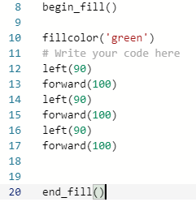
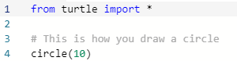
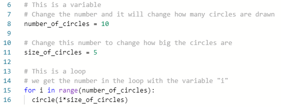
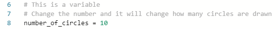
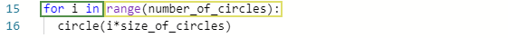

Python with Turtle: Basics Sequel
Introduction
Now that you understand the basics of programming in python with turtle, let's turn things up a notch and learn some more different functions you can apply to your code.
Websites
Repl.it: https://repl.it/
Lesson Part 1
Join The Class - Click this to join the replit class if you haven't done so before.
Up until now we have only drawn shapes using the color black, but there are so many more colorful options that we could use!
Open up the "Filling in the Square" project on Repl.it. Notice how this project is not just about chaning your line color but also adding a color to the inside of your shapes. That's because we are going to be covering two concepts at once here!
Now is a good time to learn how to read code carefully so that you can figure out what it means. Let's look at the first few lines:

Note how there are two new commands that we have not seen before: "pensize" and "pencolor". These two commands are named after exactly what they do, so they are easy to understand. "pensize" changes how big out lines will be, like when you choose between different sizes of paintbrushes. "pencolor" is even easier to understand, it just changes the color we will be drawing with.
Our code, however, can't just see any color in the "pencolor" command. When you give this command a color it has to be passed as a "string" object. The computer is not able to read everything that you can think of, so we need to put the single apostrophe marks around our color in order for the program to understand that we want a color and not something else. Try to put in a color without the apostrophes and see if the code will run.
Lesson Part 2
Now let's learn a new command that will help us fill in the shape with a color! Let's look at this next piece of code:

The "being_fill" and "end_fill" functions here tell the program what part of the shape is supposed to be filled in. The "fillcolor" function is similar to the "pencolor" command; you have to give the program a color in string format so that it knows what color to fill your shape with.
Run the full code and see how the turtle moves and fills the shape after the code reaches the "end_fill" command. What will happen if you don't close the shape and leave an empty side? Try this and see how some weird things will occur.
Can you change the colors in this code so that the shape has a red outline and orange fill? How about making the outline thicker?
Lesson Part 3
There are many different polygons we can make with what we've learned so far, but how would we make a circle? Circles are made of curves and because of this we can never have a true circle represented on the computer screen. In fact, any circle you see on your computer, like the letter "o", is actually made of a bunch of really small lines that make the illusion of smoothness.
Let's take a look at the "Circles and Loops" code. Here we will go over how to create circles and, more importantly, how to create loops in our code. Look over the first part of the new code and try to find where the circle is created:

Hopefully by now you can easily figure out where the circle is made: with the "circle" function. The number inside the function specifies how large the diameter of the circle will be. When the circle is drawn, the turtle will end in the exact same position as it started in before creating the circle.
If you run this code, you will notice that several circles get drawn with varying sizes. This is because we used a "for loop" to repeat the same command several times. Let's take a few moments to examine the different parts of the "for loop".

Notice how before we reach line 15 (this is where the "for loop" starts) that we have two lines that declare variables. A variable is something that stores data in the computer for future use in your code. You can call variables almost anything you want, but you can't name them the same as functions or other reserved words.

In python, to declare a variable you just have to write the name on the left of an equals sign "=" and what number or string you want it to be on the right. Other programming languages sometimes have more difficult ways to create new variables, which is why python is so nice for beginning to learn how to program.
In this case we are setting the variable "number_of_circles" to the integer 10. We could set it to any number we want, but let's leave it like this for now.
Let's look at the loop more closely. The first line tells the program that we are now going to repeat something multiple times. The part inside the green box explains in code to the computer that we want a new variables, called the letter "i", to go from 0 to the number specified with "range" in the yellow box. Note how the end of line 15 has a colon, this tells the program that everything from here on out is going to be inside the "for loop".

To tell the computer that something is inside the "for loop", it needs to be intended once to the right (you can do this yourself using the "tab" key on the left of your keyboard). See the "circle" command we have inside there? It looks like we aren't passing it a number like we did before, but we actually are! The * symbol is another way of telling the computer to multiply two numbers together, so each time the loop runs we create circle with a diameter of the size "i" times "size_of_circles".
Questions
- What functions do you need to add to the beginning of your code in order to change the size and color or your lines?
- Can you write a program that will create a triangle where each side is a different color and then fill it with a fourth color?
- Try to write a program that will create boxes like from the first lesson but have it loop 5 times and make each box a different size. Hint: Remember how we changed the length of something with variables? You can use this trick any time we need a number!